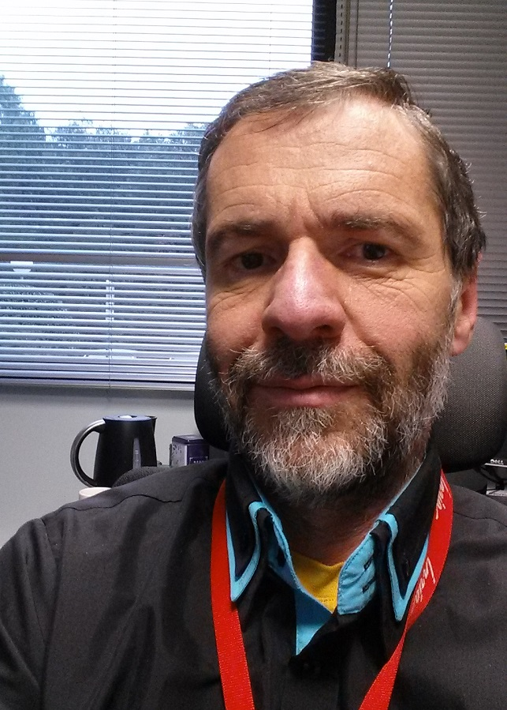

Table of Content click to show or hide
East China Normal University, Shanghai
Contact: Software Engineering Institute, East China Normal University.
Tel: (021)62224020 (Dr. Min Zhang)
Email: summerschool@sei.ecnu.edu.cn
Address: The Math Building East China Normal University, 3663 N. Zhongshan Rd., Shanghai
Postcode: 200062
SEI-ECNU Summer school advocated by Prof. JiFeng He ( Academician of CAS, dean of The Software Engineering Institute of ECNU) aims to provide a platform for the master, Ph.D students and young researchers all over China who studies in computer science or related research field. It also aims to strengthen communication between Chinese researchers and leading global research groups in Software Engineering.
The summer school is sponsored by SAFEA, ECNU and SEI etc. Many famous foreign experts and scholars all over world are invited to give the participants lectures. Since 2005 it was opened, it takes embedded system and other international frontier technologies as it subjects and received praise broadly. The topic of summer school this year is " Model and Verification Driven Engineering ". It’s our honor to have the following experts to give talks:
- Prof. Eric Madelaine(INRIA-Sophia Antipolis, France)
 - Prof. Eric Madelaine(INRIA-Sophia Antipolis, France)
- Prof. Eric Madelaine(INRIA-Sophia Antipolis, France)
- Prof. Eric Madelaine(INRIA-Sophia Antipolis, France)
- Prof. Eric Madelaine(INRIA-Sophia Antipolis, France)
- Prof. Eric Madelaine(INRIA-Sophia Antipolis, France)
Registration
Free of register expense and material and supply the lunch for the participants. The other expense should be paid by participant by self.
You can now download the registration form.
News and Events
2014-06-04 NEW! Announcement can be downloaded!.
2014-06-04 NEW! Registration is open now!
Program
- Monday, July 7th
- LIAMA Open Day
- Tuesday, July 8th
- - The polyhedral model and its use to generate parallel programs and hardware accelerators
- - Prof. Patrice Quinton
- - Generating efficient parallel programs is nowadays a major objective for computer science, with the availability of current multi- or many-core processors.
- - Generating parallel hardware accelerators is also an important challenge, in order to take advantage of available IC technologies, among which FPGAs. The polyhedral model is a way of representing regular computations, such as loops for example, so that parallelization transformations can be expressed by means of formal mathematical manipulations. In this model, calculations are represented as integral points belonging to convex polyhedra, and parallelization transformations amount to apply functions to polyhedra. Alternatively, one can use the same model to represent parallel hardware synthesis. We present an introduction to the polyhedral model and to its use for the generation of parallel program and for hardware synthesis, and we illustrate this introduction with various application examples.
- - Synchronous model of time
- - Prof. Marc Pouzet
- - Synchronous languages have been introduced in the 80's for programming embedded control software. The purpose was to allow the designer to model control-systems in a high-level language built on a mathematically precise semantics, and to associate it with static analysis and code generation mechanism insuring that the target code is equivalent to the source model. All these language share the "synchronous model of time", namely that computations can be neglected at modeling time because the compiler is able to generate target code which is proved to run in bounded time and space. The success of the original synchronous languages has spurred the development of new languages, based on the same principles, that increase modularity, expressiveness and that address new applications like real-time video streaming, latency-insensitive designs, large scale simulations, hybrid (continuous/discrete) systems.
- - Lucid Synchrone is one of these new languages. It has served as a basis for experiment with several novel extensions including, higher-order functions, type systems for the clock calculus, hierarchical state machines with shared variables, signals and new compilation methods. Many of these ideas have been adopted in commercial tools, notably SCADE 6. New topics include techniques for allowing bounded desynchronisation through buffers (N-synchrony) and extensions for modeling continuous systems.
- -During this talk, I will present the mathematical principles of synchronous languages, the major extensions that has been done in the past, notably the mix of data-flow with hierarchical automata.
- Wednesday, July 9th
- - Designing, programming, and verifying distributed systems
- - TheoreticalProf. Eric Madelaine
- - Programming large-scale distributed applications with components: the GCM component methodology and model
- - Specifying the architecture and behavior of component-based distributed software: the VerCors platform. - Model-checking (large) distributed applications: methodology, scalability, tools.
- - Design an example use-case using the Vercors Component Graphical Editors：specify the architecture graphicaly with VCE-V3, specify the behaviour with VCE State-machines, check coherency, and produce ADL code skeletons.
- Thursday, July 10th
- - LogicalTime @ Work: The Clock Constraint Specification Language
- - Prof. Frédéric Mallet
- - Logical Time is an elastic form of time made popular concurrently by synchronous languages and by Lamport's work on logical clocks for distributed systems. The Clock Constraint Specification Language gives a concrete syntax to build logical time specifications that work both at the application level, to capture causal relationships and data dependencies without restraining the potential concurrency, and at the execution platform level, to capture the relative parallelism of the multi-core architectures. The elasticity is key to adapt and progressively refine one onto the other. This lecture gives an overview of CCSL, its origins and its relationships to engineering models. It also goes over the main issues of CCSL clock calculus and of some of the results available for the verification of CCSL specifications. After introducing the concepts, a lab is proposed to use CCSL with its dedicated tool TimeSquare. The lecture also serves as an introduction to a second lecture (by Julien DeAntoni) on the use of CCSL for the orchestration and execution of heterogeneous models.
- - Static analysis by abstract interpretation
- - Dr. Julien Danteoni
- - This will be a full day course on Model Driven Engineering on reactive systems, with a theoretical part in the morning followed by and afternoon session with hands on exercises using tools such asTimeSquare simulation and verification with nuSMV.
- Friday, July 11th
- - Static analysis by abstract interpretation
- - Prof. Xavier Rival
- - In this lecture, we will show the main principles of static analysis by abstract interpretation. Static analysis aims at inferring non trivial semantic properties of programs. As all nontrivial semantic properties are not decidable, there is no hope for a full general and automatic solution to this problem. We will present the main techniques that allow to partially attack this problem, and during the rest of the lecture, we will focus on static analysis by abstract interpretation. We will give the fundamental definitions required to understand how to design a simple static analysis. In the last part of the lecture, we will demonstrate the use of a static analysis tool in a lab session.